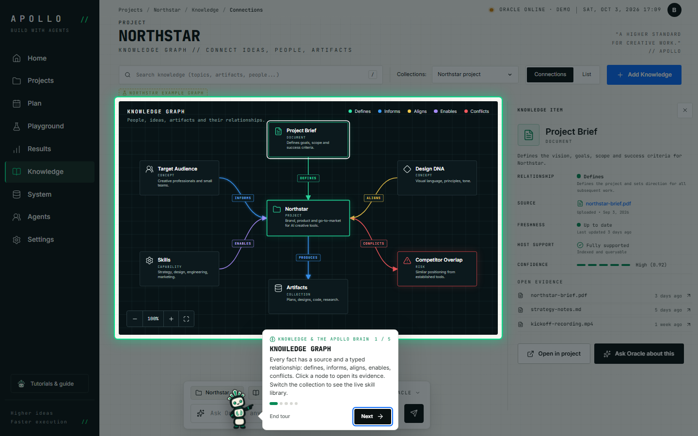

8 steps · ~2 min
Welcome to Apollo
Meet the totem, the rail, Oracle and the screen that always tells you what to do next.

7 steps · ~3 min
Your first project
Answer Oracle’s intake, read the brief it writes, tune the Design DNA and approve.

6 steps · ~3 min
Plan & customize your agents
Read the master plan, then swap skills and guardrails for any agent — safely, in a draft.

5 steps · ~2 min
Compare in Playground
Run Setup A against Setup B and see exactly which agents and skills change.

6 steps · ~2 min
Run, review & approve
Watch a run move through its tasks, approve at the gate and accept the result.

5 steps · ~2 min
Knowledge & the Apollo brain
Explore the knowledge graph, the execution graph and the neural map of agents and skills.
